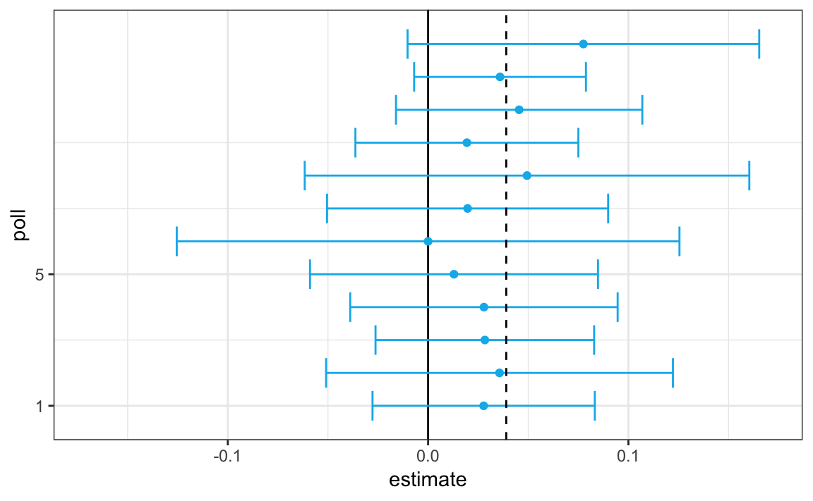

Chapter 31 Statistical models
“All models are wrong, but some are useful” -George E. P. Box
31.1 Poll aggregators
As we described earlier, in the 2012 Nate Silver was giving a Obama a 90% chance of winning. How was Mr. Silver so confident? We will demonstrate that Mr. Silver saw what others did not by using a Monte Carlo simulation. We generate results for 12 polls taken the week before the election. We mimic sample sizes from actual polls and construct and report 95% confidence intervals for each of the 12 polls:
d <- 0.039
Ns <- c(1298, 533, 1342, 897, 774, 254,
812, 324, 1291, 1056, 2172, 516)
p <- (d + 1)/2
confidence_intervals <- sapply(Ns, function(N) {
X <- sample(c(0,1), size=N, replace=TRUE, prob=c(1-p, p))
X_hat <- mean(X)
SE_hat <- sqrt(X_hat*(1-X_hat)/N)
2*c(X_hat, X_hat - 2*SE_hat, X_hat + 2*SE_hat)-1
})Let’s save the results from this simulation in a data frame:
polls <- data.frame(poll=1:ncol(confidence_intervals),
t(confidence_intervals),
sample_size=Ns) %>%
setNames(c("poll", "estimate", "low", "high", "sample_size"))Here is a visualization showing the intervals the pollsters would have reported for the difference between Obama and Romney:

Not surprisingly, all 12 polls report confidence intervals that include the election night result (dashed line). However, all 12 polls also include 0 (solid black line) as well. Therefore, if asked individually for a prediction, the pollsters would have to say: it’s a toss-up. Below we describe a key insight they are missing.
Poll aggregators, such as Nate Silver, realized that by combining the results of different polls you could greatly improve precision. By doing this, we are effectively conducting a poll with a huge sample size. We can therefore report a smaller 95% confidence interval and a more precise prediction.
Although as aggregators we do not have access to the raw poll data, we can use mathematics to reconstruct what we would have obtained had we made one large poll with:
sum(polls$sample_size)
#> [1] 11269participants. Basically, we construct an estimate of the spread, let’s call it \(d\), with a weighted average in the following way:
d_hat <- polls %>%
summarize(avg = sum(estimate*sample_size) / sum(sample_size)) %>%
.$avgOnce we have an estimate of \(d\), we can construct an estimate for the proportion voting for Obama, which we can then use to estimate the standard error. Once we do this, we see that our margin of error is 0.018.
Thus, we can predict that the spread will be 3.1 plus or minus 1.8, which not only includes the actual result, but is quite far from including 0. Once we combine the 12 polls, we become quite certain that Obama will win the popular vote.

Of course, this was just a simulation to illustrate the idea. The actual data science exercise of forecasting elections is much more complicated and it involves modeling. Below we explain how pollsters fit multilevel models to the data and use this to forecast election results. In the 2008 and 2012 US presidential elections, Nate Silver used this approach to make an almost perfect prediction and silence the pundits.
Since the 2008 elections, other organizations have started their own election forecasting group that, like Nate Silver’s, aggregates polling data and uses statistical models to make predictions. In 2016, forecasters underestimated Trump’s chances of winning greatly.

(Source: New York Times)
For example, the Princeton Election Consortium gave Trump less than 1% chance of winning, while the Huffington Post gave him a 2% chance. In contrast, FiveThirtyEight had Trump’s probability of winning at 29%, higher than tossing two coins and getting two heads. In fact, four days before the election FiveThirtyEight published an article titled Trump Is Just A Normal Polling Error Behind Clinton. By understanding statistical models and how these forecasters use them, we will start to understand how this happened.
Although not nearly as interesting as predicting the electoral college, for illustrative purposes we will start by looking at predictions for the popular vote. FiveThirtyEight predicted a 3.6% advantage for Clinton, included the actual result of 2.1% (48.2% to 46.1%) in their interval, and was much more confident about Clinton winning the election, giving her a 81.4% chance.

(Source: FiveThirtyEight)
We introduce actual data from the 2016 US presidential election to show how models are motivated and built to produce these predictions.
31.2 Poll data
We use public polling data organized by FiveThirtyEight for the 2016 presidential election. The data is included as part of of the dslabs package:
data(polls_us_election_2016)
names(polls_us_election_2016)
#> [1] "state" "startdate" "enddate"
#> [4] "pollster" "grade" "samplesize"
#> [7] "population" "rawpoll_clinton" "rawpoll_trump"
#> [10] "rawpoll_johnson" "rawpoll_mcmullin" "adjpoll_clinton"
#> [13] "adjpoll_trump" "adjpoll_johnson" "adjpoll_mcmullin"The table includes results for national polls, as well as state polls, taken during the year prior to the election. For this first example, we will filter the data to include national polls conducted during the week before the election. We also remove polls that FiveThirtyEight has determined not to be reliable and graded with a “B” or less. Some polls have not been graded and we include those:
polls <- polls_us_election_2016 %>%
filter(state == "U.S." & enddate >= "2016-10-31" &
(grade %in% c("A+","A","A-","B+") | is.na(grade)))We add a spread estimate:
polls <- polls %>%
mutate(spread = rawpoll_clinton/100 - rawpoll_trump/100)For this example, we will assume that there are only two parties and call \(p\) the proportion voting for Clinton and \(1-p\) the proportion voting for Trump. We are interested in the spread \(2p-1\). Let’s call the spread \(d\) (for difference).
We have 49 estimates of the spread. The theory we learned tells us that these estimates are a random variable with a probability distribution that is approximately normal. The expected value is the election night spread \(d\) and the standard error is \(\sqrt{p (1 - p) / N}\). Assuming the urn model we described earlier is a good one, we can use this information to construct a confidence interval based on the aggregated data. The estimated spread is:
d_hat <- polls %>%
summarize(d_hat = sum(spread * samplesize) / sum(samplesize)) %>%
.$d_hatand the standard error is:
p_hat <- (d_hat+1)/2
moe <- 1.96 * 2 * sqrt(p_hat*(1-p_hat)/sum(polls$samplesize))
moe
#> [1] 0.00662So we report a spread of 1.43% with a margin of error of 0.66%. On election night, we discover that the actual percentage was 2.1%, which is outside a 95% confidence interval. What happened?
A histogram of the reported spreads shows a problem:
polls %>%
ggplot(aes(spread)) +
geom_histogram(color="black", binwidth = .01)
The data does not appear to be normally distributed and the standard error appears to be larger than 0.007. The theory is not quite working here.
31.3 Pollster bias
Notice that various pollsters are involved and some are taking several polls a week:
polls %>% group_by(pollster) %>% summarize(n())
#> # A tibble: 15 x 2
#> pollster `n()`
#> <fct> <int>
#> 1 ABC News/Washington Post 7
#> 2 Angus Reid Global 1
#> 3 CBS News/New York Times 2
#> 4 Fox News/Anderson Robbins Research/Shaw & Company Research 2
#> 5 IBD/TIPP 8
#> 6 Insights West 1
#> # ... with 9 more rowsLet’s visualize the data for the pollsters that are regularly polling:
polls %>% group_by(pollster) %>%
filter(n() >= 6) %>%
ggplot(aes(pollster, spread)) +
geom_point() +
theme(axis.text.x = element_text(angle = 90, hjust = 1))
This plot reveals a unexpected result. First, consider that the standard error predicted by theory for each poll:
polls %>% group_by(pollster) %>%
filter(n() >= 6) %>%
summarize(se = 2 * sqrt( p_hat * (1-p_hat) / median(samplesize)))
#> # A tibble: 5 x 2
#> pollster se
#> <fct> <dbl>
#> 1 ABC News/Washington Post 0.0265
#> 2 IBD/TIPP 0.0333
#> 3 Ipsos 0.0225
#> 4 The Times-Picayune/Lucid 0.0196
#> 5 USC Dornsife/LA Times 0.0183is between 0.018 and 0.033, which agrees with the within poll variation we see. However, there appears to be differences across the polls. Note, for example, how the USC Dornsife/LA Times pollster is predicting a 4% win for Trump, while Ipsos is predicting a win larger than 5% for Clinton. The theory we learned says nothing about different pollsters producing polls with different expected values. All the polls should have the same expected value. FiveThirtyEight refers to these differences as “house effects”. We can also call them pollster bias.
In the following section, rather than use the urn model theory, we are instead going to develop a data-driven model.
31.4 Data driven model
For each pollster, let’s collect their last reported result before the election:
one_poll_per_pollster <- polls %>% group_by(pollster) %>%
filter(enddate == max(enddate)) %>%
ungroup()Here is a histogram of the data for these 15 pollsters:
one_poll_per_pollster %>%
ggplot(aes(spread)) +
geom_histogram(binwidth = 0.01)
In the previous section, we saw that using the urn model theory to combine these results might not be appropriate due to the pollster effect. Instead, we will model this spread data directly.
The new model can also be thought of as an urn model, although the connection is not as direct. Rather than 0s (Republicans) and 1s (Democrats), our urn now contains poll results from all possible pollsters. We assume that the expected value of our urn is the actual spread \(d=2p-1\).
Because instead of 0s and 1s, our urn contains continuous numbers between -1 and 1, the standard deviation of the urn is no longer \(\sqrt{p(1-p)}\). Rather than voter sampling variability, the standard error now includes the pollster to pollster variability. Our new urn, also includes the sampling variability from the polling. Regardless, this standard deviation is now an unknown parameter. In statistics textbooks, the Greek symbol \(\sigma\) is used to represent this parameter.
In summary, we have two unknown parameters: the expected value \(d\) and the standard deviation \(\sigma\).
Our task is to estimate \(d\). Because we model the observed values \(X_1,\dots X_N\) as a random sample from the urn, the CLT still works in this situation because it is an average of independent random variables. For a large enough sample size \(N\), the probability distribution of the sample average \(\bar{X}\) is approximately normal with expected value \(\mu\) and standard error \(\sigma/\sqrt{N}\). If we are willing to consider \(N=15\) large enough, we can use this to construct confidence intervals.
A problem is that we don’t know \(\sigma\). But theory tells us that we can estimate the urn model \(\sigma\) with the sample standard deviation defined as:
\[ s = \sqrt{ \frac{1}{N-1}\sum_{i=1}^N (X_i - \bar{X})^2} \]
Unlike for the population standard deviation definition, we now divide by \(N-1\). This makes \(s\) a better estimate of \(\sigma\). There is a mathematical explanation for this, which is explained in most statistics textbooks, but we don’t cover it here.
The sd function in R computes the sample standard deviation:
sd(one_poll_per_pollster$spread)
#> [1] 0.0242We are now ready to form a new confidence interval based on our new data driven model:
results <- one_poll_per_pollster %>%
summarize(avg = mean(spread),
se = sd(spread)/sqrt(length(spread))) %>%
mutate(start = avg - 1.96*se,
end = avg + 1.96*se)
round(results*100,1)
#> avg se start end
#> 1 2.9 0.6 1.7 4.1Our confidence interval is wider now since it incorporates the pollster variability. It does include the election night result of 2.1%. Also, note that it was small enough not to include 0, which means we were confident Clinton would win the electoral vote.
Are we now ready to declare a probability of Clinton winning the popular vote? Not yet. In our model \(d\) is a fixed parameter so we can’t talk about probabilities. To provide probabilities, we will need to learn about Bayesian statistics.
Exercises
- We have been using urn models to motivate the use of probability models. Most data science applications are not related to data obtained from urns. More common are data that come from individuals. The reason probability plays a role here is because the data come from a random sample. The random sample is taken from a population and the urn serves as an analogy for the population.
Let’s revisit the heights dataset. Suppose we consider the males in our course the population.
```r
library(dslabs)
data(heights)
x <- heights %>% filter(sex == "Male") %>%
.$height
```
Mathematically speaking, `x` is our population. Using the urn analogy, we have an urn with the values of `x` in it. What are the average and standard deviation of our population?Call the population average computed above \(\mu\) and the standard deviation \(\sigma\). Now take a sample of size 50, with replacement, and construct an estimate for \(\mu\) and \(\sigma\). Set the seed at 1 based on what has been described in this section.
What does the theory tell us about the sample average \(\bar{X}\) and how it is related to \(\mu\)?
A. It is practically identical to \(\mu\).
B. It is a random variable with expected value \(\mu\) and standard error \(\sigma/\sqrt{N}\).
C. It is a random variable with expected value \(\mu\) and standard error \(\sigma\).
D. Contains no information.
So how is this useful? We are going to use an oversimplified yet illustrative example. Suppose we want to know the average height of our male students, but we only get to measure 50 of the 708. We will use \(\bar{X}\) as our estimate. We know from the answer to exercise 3 that the standard estimate of our error \(\bar{X}-\mu\) is \(\sigma/\sqrt{N}\). We want to compute this, but we don’t know \(\sigma\). Based on what is described in this section, show your estimate of \(\sigma\).
Now that we have an estimate of \(\sigma\), let’s call our estimate \(s\). Construct a 95% confidence interval for \(\mu\).
Now run a Monte Carlo simulation in which you compute 10,000 confidence intervals as you have just done. What proportion of these intervals include \(\mu\)? Set the seed to 1.
In this section, we talked about pollster bias. We used visualization to motivate the presence of such bias. Here we will give it a more rigorous treatment. We will consider two pollsters that conducted daily polls. We will look at national polls for the month before the election.
data(polls_us_election_2016) polls <- polls_us_election_2016 %>% filter(pollster %in% c("Rasmussen Reports/Pulse Opinion Research", "The Times-Picayune/Lucid") & enddate >= "2016-10-15" & state == "U.S.") %>% mutate(spread = rawpoll_clinton/100 - rawpoll_trump/100)We want to answer the question: is there a poll bias? Make a plot showing the spreads for each poll.
The data does seem to suggest there is a difference. However, these data are subject to variability. Perhaps the differences we observe are due to chance.
The urn model theory says nothing about pollster effect. Under the urn model, both pollsters have the same expected value: the election day difference, that we call \(d\).
To answer the question: is there an urn model?, we will model the observed data \(Y_ij\) in the following way:
\[ Y_{ij} = d + b_i + \varepsilon_{ij} \]
with \(i=1,2\) indexing the two pollsters, \(b_i\) the bias for pollster \(i\) and \(\varepsilon_ij\) poll to poll chance variability. We assume the \(\varepsilon\) are independent from each other, have expected value \(0\) and standard deviation \(\sigma_i\) regardless of \(j\).
Which of the following best represents our question?
A. Is \(\varepsilon_ij\) = 0?
B. How close are the \(Y_ij\) to \(d\)?
C. Is \(b_1 \neq b_2\)?
D. Are \(b_1 = 0\) and \(b_2 = 0\) ?
In the right side of this model only \(\varepsilon_ij\) is a random variable. The other two are constants. What is the expected value of \(Y_{1j}\)?
Suppose we define \(\bar{Y}_1\) as the average of poll results from the first poll, \(Y_{11},\dots,Y_{1N_1}\) with \(N_1\) the number of polls conducted by the first pollster:
polls %>% filter(pollster=="Rasmussen Reports/Pulse Opinion Research") %>% summarize(N_1 = n())What is the expected values \(\bar{Y}_1\)?
What is the standard error of \(\bar{Y}_1\) ?
What is the expected value \(\bar{Y}_2\)?
What is the standard error of \(\bar{Y}_2\) ?
Using what we learned by answering the questions above, what is the expected value of \(\bar{Y}_{2} - \bar{Y}_1\)?
Using what we learned by answering the questions above, what is the standard error of \(\bar{Y}_{2} - \bar{Y}_1\)?
\[ \mbox{SE}(\bar{Y}_{2} - \bar{Y}_1) = \sqrt{\mbox{SE}(\bar{Y}_{2})^2 + \mbox{SE}(\bar{Y}_1)^2} = \sqrt{\sigma_2^2/N_2 + \sigma_1^2/N_1}\]
The answer to the question above depends on \(\sigma_1\) and \(\sigma_2\), which we don’t know. We learned that we can estimate these with the sample standard deviation. Write code that computes these two estimates.
What does the CLT tells us about the distribution of \(\bar{Y}_2 - \bar{Y}_1\)?
A. Nothing because this is not the average of a sample.
B. Because the \(Y_{ij}\) are approximately normal, so are the averages.
\(\bar{Y}_2\) and \(\bar{Y}_1\) are sample averages so if we assume \(N_2\) and \(N_1\) are large enough, each is approximately normal. The difference of normals is also normal.
The data are not 0 or 1, so CLT does not apply.
We have constructed a random variable that has expected value \(b_2 - b_1\), the pollster bias difference. If our model holds, then this random variable has an approximately normal distribution and we know its standard error. The standard error depends on \(\sigma_1\) and \(\sigma_2\), but we can plug the sample standard deviations we computed above. We started off by asking: is \(b_2 - b_1\) different from 0? Use all the information we have learned above to construct a 95% confidence interval for the difference \(b_2\) and \(b_1\).
The confidence interval tells us there is relatively strong pollster effect resulting in a difference of about 5%. Random variability does not seem to explain it. We can compute a p-value to relay the fact that chance does not explain it. What is the p-value?
The statistic formed by dividing our estimate of \(b_2-b_1\) by its estimated standard error:
\[ \frac{\bar{Y}_2 - \bar{Y}_1}{\sqrt{s_2^2/N_2 + s_1^2/N_1}} \]
is called the t-statistic. Later we learn of another approximation for the distribution of this statistic for values of \(N_2\) and \(N_1\) that aren’t large enough for the CLT. Now notice that we have more than two pollsters. We can also test for pollster effect using all pollsters, not just two. The idea is to compare the variability across polls to variability within polls. We can actually construct statistics to test for effects and approximate their distribution. The area of statistics that does this is called Analysis of Variance or ANOVA. We do not cover it here, but ANOVA provides a very useful set of tools to answer questions such as: is there a pollster effect?
For this exercise, create a new table:
polls <- polls_us_election_2016 %>% filter(enddate >= "2016-10-15" & state == "U.S.") %>% group_by(pollster) %>% filter(n() >= 5) %>% mutate(spread = rawpoll_clinton/100 - rawpoll_trump/100) %>% ungroup()Compute the average and standard deviation for each pollster and examine the variability across the averages and how it compares to the variability within the pollsters, summarized by the standard deviation.